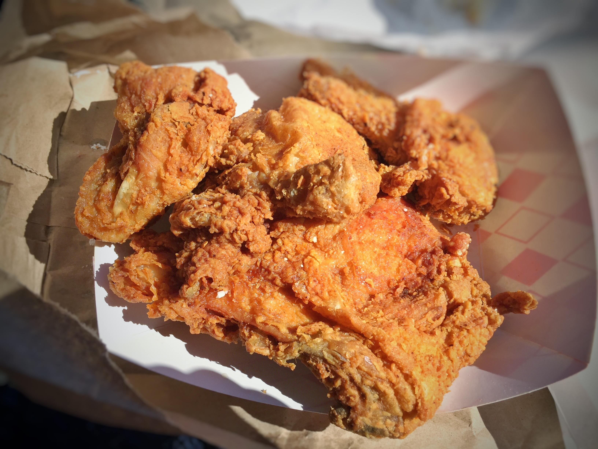

Hermanos' Crispy Chicken

Description
"Are you kidding me? This is the best chicken I have ever had." - Lalo Salamanca
This is the best fried chicken recipe you will ever have, last chance to eat me señor.
Ingredients
- Chicken Legs and Thighs
- Cumin
- Chicken Broth
- Garlic Powder
- Chili Powder
- Lime Zest
- Flour
- Cornstarch
- Tequila
- Salt
- 1 Egg
Steps
- Mix seasoning, set aside 1 tbsp, and split the rest in half.
- Mix half with salt and hot water to make brine. Submerge chicken and refrigerate for 4–10 hours.
- Remove chicken, pat dry and heat oil to 375°F.
- Mix batter ingredients with remaining seasoning.
- Dip chicken in batter and fry 2–3 pieces at a time.
- Cook until internal temperature reaches 160°F, then drain on a wire rack.
- Sprinkle with reserved seasoning and serve!
Return To Homepage